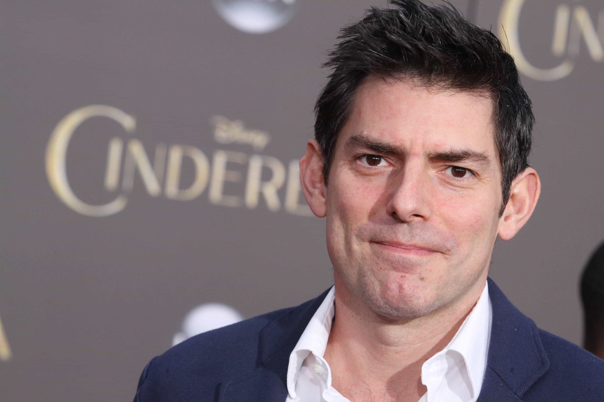
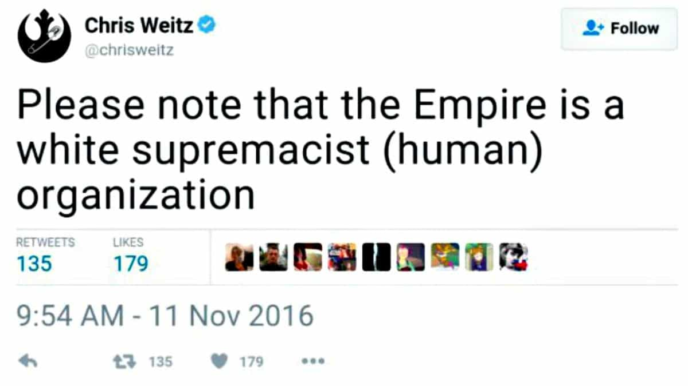
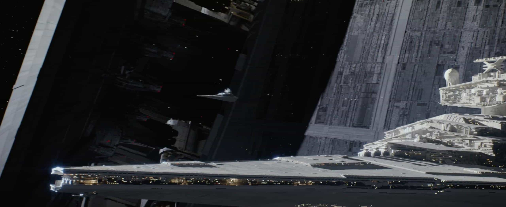

< < < Back
Rogue One Shows That Hollywood Is Listening To Our Complaints About Feminism In Films – Return Of Kings
Trigger warning for way too sensitive SJW souls: this review contains spoilers.
Earlier this year, I wrote that the spinoff film Rogue One demonstrated Star Wars owner Disney’s hatred of white males. Whilst my view has been vindicated within the last few days after seeing the film, Rogue One significantly toned down the SJW madness on display in The Force Awakens last year. My review of the latter set off a storm of controversy against Return Of Kings, which then turned into outright hate from Jimmy Kimmel and Forbes when Roosh took a poll about how our coverage adversely impacted ticket sales.
Return Of Kings will not endorse the film, but Rogue One illustrates how the film industry is quickly becoming aware of viewers’ anger at SJW madness being forced down their throats. Just as many critics of the prequel films released between 1999 and 2005 nonetheless saw the films multiple times, many audience members at The Force Awakens screenings could appreciate the aerial battles, the thrill of a reignited galactic civil war, and other elements, all without celebrating the outright Mary Sue character Rey.
Rogue One‘s female main character, Jyn Erso, is very annoying for much of the film, yet hardly the most unbearable estrogen-filled creation to ever come onscreen. Thankfully, the film depicts a woman who is not going to single-handedly save the galaxy after reading Lenny Letter. And, lo and behold, she is not so empowered that she can cheat death as she tries to retrieve the Death Star plans.
Though clearly partly chosen for his foreign accent and Hispanic background, Diego Luna’s character, Rebel intelligence operative Cassian Andor, is a welcome (half)-foil for Erso’s mini-tantrums. Just as feminists use the Bechdel test to determine a character’s worth, I assessed Andor moderately positively based on his willingness to have the balls to talk back to Jyn. He certainly followed her around too much, but stuck up for himself and confronted this female lead a lot more than the Christmas tree decoration Finn did with Rey in The Force Awakens. To boot, he ends up saving her (for a little while).
Believe it or not, the scientists in Rogue One are actually all men
The real hero of the film is Death Star designer Galen Erso, Jyn’s father, whom Disney miraculously did not turn into a woman implicitly touting the need for girls in STEM. And the complexity to his character is, for a film made by Disney, second-to-none, as he neither works for the Rebellion nor is he a lapdog for the Empire. It is difficult to tell who provided the nucleus for Galen’s character, but even if it was SJW writer Christ Weitz or fellow SJW writer Gary Whitta, perhaps they can still be saved from the clutches of their putrid ideology. Regardless of the film’s other scientists being, ahem, expendable, at least they’re rightfully depicted as wizened, learned men, not young girls wearing hipster glasses.
Another highlight, too, is the highly ambitious Director Krennic and several cameos by both Darth Vader and a CGI-created Grand Moff Tarkin. So far Disney has resisted the urge, however difficult, to fill the Empire or First Order with loads of power-hungry Dark Side or Imperial girls who should nevertheless be applauded for the gains they have made for female representation in authoritarian governments. Krennic’s character development is a tad uneven, probably reflecting some of the issues created by extensive reshoots earlier this year. Tellingly, the best line of the “film,” the Director’s “The powaahh we are dealing with is immeasurable!”, was taken from the final cut of Rogue One.
SJWs can’t be attacked for not trying

Massively privileged and connected writer Chris Weitz. If he were truly concerned about the need for multiculturalism, he should have fucked off from the film. Having the world’s whitest Mexican actress as your grandmother does not make you non-white.
One take-home lesson from Rogue One is that its writers definitely tried with all their might to make it a SJW reeducation film, before realizing how it would damage them. On the race front (all the villains are white males but none of the major Rebellion characters are) they certainly succeeded. Chris Weitz made his and his colleagues’ intentions very clear:

The other principal writer for Rogue One, Gary Whitta, responded to Weitz’s now expunged tweet with a similar, also deleted sentiment:
Bear in mind that this was just days after the election of Donald Trump. Weitz, Whitta and others involved with Star Wars had wheeled out a Rebellion insignia with a safety pin on Twitter in order to fight “hate.” I’m sure Trump took note–and laughed.
The reshoots seem to have been about reducing the SJW agenda, not the “dark” tone of the film

Was Rogue One too dark because there were no safe spaces?
It has been alleged that Gareth Edwards, the director of the Godzilla reboot as well, presented a version of Rogue One to Disney executives, who balked at the “dark” overtones. Still, this doesn’t explain why a number of the trailers’ “girl power” moments were excised from the final product. Foremost among them was the ridiculous “confront a TIE fighter with a pistol” scene. Perhaps the pilot was a Rebel about to pick her up (no, not that kind of pick-up), but the footage was designed to emphasize how badass and untameable Jyn Erso is.
Also removed were the shots of Jyn operating alone and wearing an Imperial uniform, waving the flag for rich Core Worlds über-feminists everywhere. Maybe, just maybe, the director and others recognized how they were turning Rogue One into The Jyn Erso Show, much like how The Force Awakens literally became The Rey Show. Likewise, two particularly horrendous lines of Rey-inspired dialogue by Jyn (“This is a rebellion, isn’t it? I rebel!” and “Let’s get this over, shall we?”) were cut, too.
Yup, a lot of the leftist rags hated it but couldn’t say why
That sweaty feeling leftists get when a new Star Wars film isn’t as SJW as they want.
Our friends at The Sydney Morning Herald called it “disappointing.” The Guardian moaned, in typical Guardian nitpicking fashion, that the deceased Peter Cushing’s likeness was stolen to recreate Grand Moff Tarkin, despite the filmmakers getting the necessary permission from his estate. So did The Huffington Post. Yes, other more positive reviews did come from the mainstream media, an indication of the middling ground Rogue One took between SJW extremism and normality. That said, the tiniest of gripes, including about a harmless pun by Darth Vader, were thrown into the mix. Anything and everything was deployed to avoid telling the truth: “We hate this film because it has no fully-fledged Rey.”
By the way, Return Of Kings can admit when it’s wrong. Our prediction that Rogue One would usher in another unbridled piece of feminist propaganda was only half-true in the end. But again, this was not for lack of trying on the part of SJW writers and production executives.
I anticipate that either the second or third film in the new conventional Star Wars trilogy will see Return Of Kings launching another widely-covered and extremely successful boycott. Until that time, we can be thankful that the Force was half with Rogue One.
Read More: Why Star Wars: The Force Awakens Is A Social Justice Propaganda Film